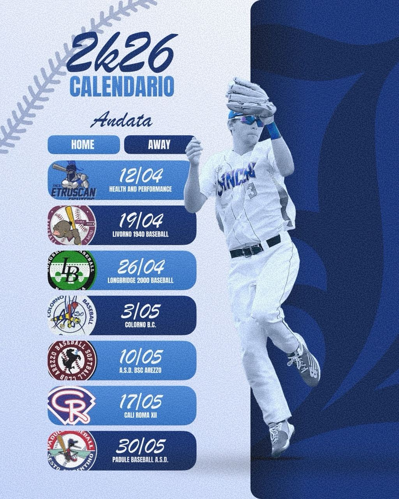
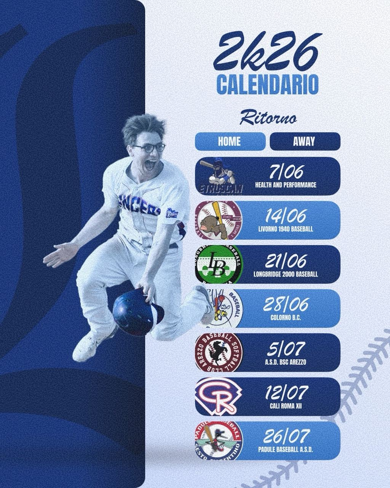

Calendario e classifica Serie B
Serie B 2026 – Girone C
16vittorie
11sconfitte
4°in classifica
Calendario e risultati
aprile
dom 12 apr11:00@ Etruscan FightersIn trasferta · Castiglione della Pescaia3 – 4Sdom 12 apr
gara 2@ Etruscan FightersIn trasferta · Castiglione della Pescaia8 – 10Sdom 19 apr
11:00@ Livorno 1948In trasferta · Livorno9 – 16Sdom 19 apr
gara 2@ Livorno 1948In trasferta · Livorno12 – 7Vdom 26 apr
11:00vs Longbridge BolognaIn casa · Lastra a Signa13 – 14Sdom 26 apr
gara 2vs Longbridge BolognaIn casa · Lastra a Signa7 – 12S
maggio
dom 3 mag11:00@ ColornoIn trasferta · Colorno3 – 2Vdom 3 mag
gara 2@ ColornoIn trasferta · Colorno4 – 2V
dom 10 mag
11:00vs ArezzoIn casa · Lastra a Signarinviata
11:00vs ArezzoIn casa · Lastra a Signarinviata
dom 10 mag
gara 2vs ArezzoIn casa · Lastra a Signarinviata
dom 17 maggara 2vs ArezzoIn casa · Lastra a Signarinviata
11:00vs Cali RomaIn casa · Lastra a Signa3 – 1Vdom 17 mag
gara 2vs Cali RomaIn casa · Lastra a Signa3 – 2Vdom 24 mag
11:00vs ArezzoIn casa · Lastra a Signa · 8 inning11 – 1Vdom 24 mag
gara 2vs ArezzoIn casa · Lastra a Signa · 8 inning14 – 4Vsab 30 mag
15:00@ Padule Sesto F.noIn trasferta · Sesto Fiorentino6 – 14Ssab 30 mag
20:00@ Padule Sesto F.noIn trasferta · Sesto Fiorentino1 – 2S
giugno
dom 7 giu11:00vs Etruscan FightersIn casa · Lastra a Signa7 – 10Sdom 7 giu
gara 2vs Etruscan FightersIn casa · Lastra a Signa5 – 4Vdom 14 giu
11:00vs Livorno 1948In casa · Lastra a Signa · 6 inning19 – 4Vdom 14 giu
gara 2vs Livorno 1948In casa · Lastra a Signa8 – 3Vdom 21 giu
11:00@ Longbridge BolognaIn trasferta · Bologna3 – 6Sdom 21 giu
gara 2@ Longbridge BolognaIn trasferta · Bologna8 – 5Vdom 28 giu
11:00vs ColornoIn casa · Lastra a Signa3 – 4Sdom 28 giu
gara 2vs ColornoIn casa · Lastra a Signa9 – 0V
luglio
dom 5 lug11:00@ ArezzoIn trasferta · Arezzo3 – 4Sdom 5 lug
gara 2@ ArezzoIn trasferta · Arezzo · 5 inning20 – 0Vdom 12 lug
11:00@ Cali RomaIn trasferta · Roma17 – 15Vdom 12 lug
gara 2@ Cali RomaIn trasferta · Roma · 7 inning19 – 2Vdom 26 lug
11:00vs Padule Sesto F.noIn casa · Lastra a Signa · 10 inning9 – 8V
dom 26 lug
gara 2vs Padule Sesto F.noIn casa · Lastra a Signarinviata
gara 2vs Padule Sesto F.noIn casa · Lastra a Signarinviata
agosto
dom 2 ago
11:00vs Padule Sesto F.noIn casa · Lastra a Signaannullata
11:00vs Padule Sesto F.noIn casa · Lastra a Signaannullata
Classifica
| # | Squadra | V | P | G | % | Dist. |
|---|---|---|---|---|---|---|
| 1 | Longbridge Bologna | 20 | 8 | 28 | .714 | – |
| 2 | Padule Sesto F.no | 19 | 8 | 27 | .704 | 0,5 |
| 3 | Cali Roma | 18 | 10 | 28 | .643 | 2 |
| 4 | Lancers | 16 | 11 | 27 | .593 | 3,5 |
| 5 | Etruscan Fighters | 16 | 12 | 28 | .571 | 4 |
| 6 | Colorno | 10 | 18 | 28 | .357 | 10 |
| 7 | Livorno 1948 | 6 | 22 | 28 | .214 | 14 |
| 8 | Arezzo | 6 | 22 | 28 | .214 | 14 |
V vinte · P perse · G giocate · Dist. partite di distacco dalla prima. Tocca una partita giocata per aprire il tabellino FIBS.
Dati aggiornati al 16 novembre 2026. Fonte: FIBS · calendario ufficiale
Il calendario in immagini
RISULTATI SERIE B girone C 2026



